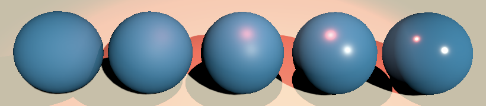
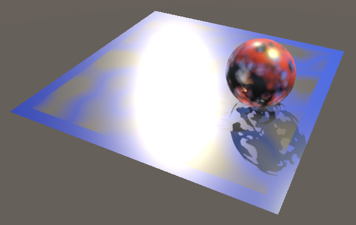

Reflections
Specular and Environmental
- Add specular highlights.
- Reflect the environment.
- Support non-uniform scaling.
- Work with reflection probes.
- Combine reflections and transparency.
This is the seventh installment of a tutorial series covering Unity's scriptable render pipeline. It covers the addition of reflections, both specular highlights and sampled reflection probes.
This tutorial is made with Unity 2018.3.0f2.
Specular Highlights
Up to this point we've only used simple diffuse lighting, without any highlights. We're going to change that now, adding support for specular lighting. We'll used the same model that's used in Unity's Lightweight render pipeline. The Rendering 4, The Fist Light tutorial covers the theory behind specular lighting, but uses an different model.
Smoothness
A perfectly diffuse surface—a perfect diffuser—has no specular reflections at all. The surface is so rough that no focused reflection takes place. The smoother a surface gets, the more lights bounces off it instead of getting diffused. We'll control this via a smoothness material property that goes from 0 to 1, with ½ as the default.
_Cutoff ("Alpha Cutoff", Range(0, 1)) = 0.5
_Smoothness ("Smoothness", Range(0, 1)) = 0.5
Add the corresponding shader variable.
CBUFFER_START(UnityPerMaterial) float4 _MainTex_ST; float _Cutoff; float _Smoothness; CBUFFER_END
Surface Data
Including specular reflections makes our lighting model more complex. Let's put all its code in a separate file, Lighting.hlsl. In it, we'll define a LitSurface struct that contains all surface data needed to perform the lighting calculations. That's the surface's normal, position, diffuse and specular colors, and its roughness. We'll also include the view direction. It's not really a property of the surface, but it's constant relative to the surface point that we're working with.
#ifndef MYRP_LIGHTING_INCLUDED
#define MYRP_LIGHTING_INCLUDED
struct LitSurface {
float3 normal, position, viewDir;
float3 diffuse, specular;
float roughness;
};
#endif // MYRP_LIGHTING_INCLUDED
Add a GetLitSurface function that return the lit surface data. We won't rely on shader-specific properties, textures, or definitions in this HLSL file, so all relevant data has to be defined as parameters. Although we take smoothness as input, internally we'll work with roughness, which is simply its reverse. Also, we use the metallic workflow and limit ourselves to dielectric materials for now. Dielectrics are nonmetals and purely reflect only a tiny amount of light, corresponding to a grayscale specular of 0.04 on average. We'll hard-code that, just like Unity's lighting code does.
struct LitSurface {
…
};
LitSurface GetLitSurface (
float3 normal, float3 position, float3 viewDir,
float3 color, float smoothness
) {
LitSurface s;
s.normal = normal;
s.position = position;
s.viewDir = viewDir;
s.diffuse = color;
s.specular = 0.04;
s.roughness = 1.0 - smoothness;
return s;
}
The roughness that we have at this point is actually a value known as perceptual roughness, according to the Disney model. The physical roughness is the square of that. We'll need both.
struct LitSurface {
float3 normal, position, viewDir;
float3 diffuse, specular;
float perceptualRoughness, roughness;
};
LitSurface GetLitSurface (
float3 normal, float3 position, float3 viewDir,
float3 color, float smoothness
) {
…
s.perceptualRoughness = 1.0 - smoothness;
s.roughness = s.perceptualRoughness * s.perceptualRoughness;
return s;
}
Include Lighting.hlsl in Lit.hlsl.
#include … #include "Lighting.hlsl"
Now we can get the surface in LitPassFragment, before performing any lighting calculations. The view direction is simply the camera position minus the fragment position, normalized.
float3 viewDir = normalize(_WorldSpaceCameraPos - input.worldPos.xyz); LitSurface surface = GetLitSurface( input.normal, input.worldPos, viewDir, albedoAlpha.rgb, _Smoothness ); float3 diffuseLight = input.vertexLighting;
Diffuse Lighting
We're going to move the lighting calculations to Lighting.hlsl. Give it a LightSurface function for this purpose, with the surface and light direction as parameters. It performs the diffuse dot product and multiplies that by the surface's diffuse color. We're assuming an ideal light here, pure white without any attenuation. That keeps it simple.
float3 LightSurface (LitSurface s, float3 lightDir) {
float3 color = s.diffuse;
return color * saturate(dot(s.normal, lightDir));
}
Adjust MainLight so it only has the surface as a parameter instead of the position and normal vectors. Have it invoke LightSurface instead of performing the dot product itself. This is where we apply the attenuation and light color, as before.
float3 MainLight (LitSurface s) {
float shadowAttenuation = CascadedShadowAttenuation(s.position);
float3 lightColor = _VisibleLightColors[0].rgb;
float3 lightDirection = _VisibleLightDirectionsOrPositions[0].xyz;
//float diffuse = saturate(dot(normal, lightDirection));
float3 color = LightSurface(s, lightDirection);
color *= shadowAttenuation;
return color * lightColor;
}
Adjust DiffuseLight in the same way, renaming it to GenericLight, which better describes its purpose from now on.
//float3 DiffuseLight (// int index, float3 normal, float3 worldPos, float shadowAttenuation//) {float3 GenericLight (int index, LitSurface s, float shadowAttenuation) { … float3 lightVector = lightPositionOrDirection.xyz - s.position * lightPositionOrDirection.w; float3 lightDirection = normalize(lightVector);//float diffuse = saturate(dot(normal, lightDirection));float3 color = LightSurface(s, lightDirection); … float distanceSqr = max(dot(lightVector, lightVector), 0.00001); color *= shadowAttenuation * spotFade * rangeFade / distanceSqr; return color * lightColor; }
LitPassFragment now has to pass the surface as an argument. Also, diffuse is now factored into the color along the way, instead of at the end. We still have to factor it into the vertex lighting though, at the start.
//float3 diffuseLight = input.vertexLighting;float3 color = input.vertexLighting * surface.diffuse; #if defined(_CASCADED_SHADOWS_HARD) || defined(_CASCADED_SHADOWS_SOFT) color += MainLight(surface); #endif for (int i = 0; i < min(unity_LightIndicesOffsetAndCount.y, 4); i++) { int lightIndex = unity_4LightIndices0[i]; float shadowAttenuation = ShadowAttenuation(lightIndex, input.worldPos); color += GenericLight(lightIndex, surface, shadowAttenuation); }//float3 color = diffuseLight * albedoAlpha.rgb;return float4(color, albedoAlpha.a);
We also have to use GenericLight for the vertex lights. Vertex lighting is purely diffuse, so only the position and normal are needed. The color is white and the other values don't matter. Let's add a convenient wrapper function for that to Lighting.hlsl.
LitSurface GetLitSurfaceVertex (float3 normal, float3 position) {
return GetLitSurface(normal, position, 0, 1, 0);
}
Then use it in LitPassVertex.
LitSurface surface = GetLitSurfaceVertex(output.normal, output.worldPos);
output.vertexLighting = 0;
for (int i = 4; i < min(unity_LightIndicesOffsetAndCount.y, 8); i++) {
int lightIndex = unity_4LightIndices1[i - 4];
output.vertexLighting += GenericLight(lightIndex, surface, 1);
}
Optional Specular
Before we add specular highlighting, let's make it possible to skip that, to still support perfectly diffuse materials. We'll indicate that via a boolean field that we add to the surface and as a parameter to GetLitSurface, set to false by default. The idea is that you'll hard-code the argument, or make it dependent on a shader keyword.
In case of a perfect diffuser, smoothness and specular should always be zero.
struct LitSurface {
…
bool perfectDiffuser;
};
LitSurface GetLitSurface (
float3 normal, float3 position, float3 viewDir,
float3 color, float smoothness, bool perfectDiffuser = false
) {
…
s.diffuse = color;
if (perfectDiffuser) {
smoothness = 0.0;
s.specular = 0.0;
}
else {
s.specular = 0.04;
}
s.perfectDiffuser = perfectDiffuser;
s.perceptualRoughness = 1.0 - smoothness;
return s;
}
Also, we can make all specular calculations conditional on that boolean. Only the final dot product is always needed.
float3 LightSurface (LitSurface s, float3 lightDir) {
float3 color = s.diffuse;
if (!s.perfectDiffuser) {}
return color * saturate(dot(s.normal, lightDir));
}
This is exactly what we need for vertex lighting.
LitSurface GetLitSurfaceVertex (float3 normal, float3 position) {
return GetLitSurface(normal, position, 0, 1, 0, true);
}
Specular Lighting
The idea behind the specular highlight is that it represents a pure reflection. A light ray hits the surface and some of it gets reflected. If the camera is aligned so it matches the reflection perfectly, then it sees the light, otherwise it doesn't. But if a surface isn't perfectly smooth then the reflection gets scattered a little, so the camera still sees some of the reflection even when it isn't perfectly aligned. The rougher the surface, the larger this transition zone gets. That creates the specular highlight.
Unity's Lightweight render pipeline uses a modified minimalist CookTorrance BRDF to calculate the highlight. We'll perform the same calculations. See Lighting.hlsl in the Lightweight RP package for details and links for further reading.
if (!s.perfectDiffuser) {
float3 halfDir = SafeNormalize(lightDir + s.viewDir);
float nh = saturate(dot(s.normal, halfDir));
float lh = saturate(dot(lightDir, halfDir));
float d = nh * nh * (s.roughness * s.roughness - 1.0) + 1.00001;
float normalizationTerm = s.roughness * 4.0 + 2.0;
float specularTerm = s.roughness * s.roughness;
specularTerm /= (d * d) * max(0.1, lh * lh) * normalizationTerm;
color += specularTerm * s.specular;
}
Light that gets reflected doesn't also get scattered, so reduce the diffuse color accordingly in GetLitSurface, unless the surface is perfect diffuser.
if (perfectDiffuser) {
smoothness = 0.0;
s.specular = 0.0;
}
else {
s.specular = 0.04;
s.diffuse *= 1.0 - 0.04;
}
Smoothness Per Object
We made the InstancedColor component so we can give each object its own color without requiring separate materials. We can do the same for smoothness. We can do both with the same component, but we should rename it to better describe its more generic functionality.
First, rename the asset file in the Project window from InstancedColor to InstancedMaterialProperties, then rename the class definition in the code and add smoothness. Doing it in that order makes it possible for the Unity editor to keep all component references intact. Otherwise you'd have to fix missing script references.
//public class InstancedColor : MonoBehaviour {public class InstancedMaterialProperties : MonoBehaviour { static MaterialPropertyBlock propertyBlock; static int colorID = Shader.PropertyToID("_Color"); static int smoothnessId = Shader.PropertyToID("_Smoothness"); [SerializeField] Color color = Color.white; [SerializeField, Range(0f, 1f)] float smoothness = 0.5f; … void OnValidate () { … propertyBlock.SetColor(colorID, color); propertyBlock.SetFloat(smoothnessId, smoothness); GetComponent<MeshRenderer>().SetPropertyBlock(propertyBlock); } }

To keep GPU instancing we have to move the smoothness variable to the instancing buffer.
CBUFFER_START(UnityPerMaterial) float4 _MainTex_ST; float _Cutoff;//float _Smoothness;CBUFFER_END … UNITY_INSTANCING_BUFFER_START(PerInstance) UNITY_DEFINE_INSTANCED_PROP(float4, _Color) UNITY_DEFINE_INSTANCED_PROP(float, _Smoothness) UNITY_INSTANCING_BUFFER_END(PerInstance)
And retrieve it by using the UNITY_ACCESS_INSTANCED_PROP macro.
LitSurface surface = GetLitSurface( input.normal, input.worldPos, viewDir, albedoAlpha.rgb, UNITY_ACCESS_INSTANCED_PROP(PerInstance, _Smoothness) );
Reflecting the Environment
The specular highlight represents a direct reflection of the light source. But light—both direct and indirect—can come from all directions. We cannot trace all these reflections in realtime, so we'll sample a cube map that contains the environment lighting instead.
Sampling the Environment
The default environment is the skybox. Unity makes it available in the shader via unity_SpecCube0. This is a cube map texture resource, which we can define via the TEXTURECUBE macro, along with a samplerunity_SpecCube0 sampler state. Define these in Lighting.hlsl along with the other variables and resources, as the specifics of how we got the environment data isn't relevant for the lighting calculations.
TEXTURECUBE(unity_SpecCube0); SAMPLER(samplerunity_SpecCube0);
Again in Lit.hlsl, define a SampleEnvironment function with the surface as a parameter. It will sample the cube map the same way as described in Rendering 8, Reflections. First, use the reflect function with the negative view direction and surface normal to get the reflection vector. Then invoke PerceptualRoughnessToMipmapLevel to find the correct mip level based on the perceptual roughness. After that we can sample the cube map with the SAMPLE_TEXTURECUBE_LOD macro and use the result as the final color.
float3 SampleEnvironment (LitSurface s) {
float3 reflectVector = reflect(-s.viewDir, s.normal);
float mip = PerceptualRoughnessToMipmapLevel(s.perceptualRoughness);
float3 uvw = reflectVector;
float4 sample = SAMPLE_TEXTURECUBE_LOD(
unity_SpecCube0, samplerunity_SpecCube0, uvw, mip
);
float3 color = sample.rgb;
return color;
}
PerceptualRoughnessToMipmapLevel is defined in the ImageBasedLighting.hlsl Core RP Library file. Rough surfaces produce fuzzy reflections, which we get by selecting an appropriate mip level. Unity generates special mipmaps to represent scattered reflections.
#include "Packages/com.unity.render-pipelines.core/ShaderLibrary/ImageBasedLighting.hlsl" #include "Lighting.hlsl"
To check whether this works, sample the environment at the end of LitPassFragment and use it as the final color, overriding out lighting.
float4 LitPassFragment (
VertexOutput input, FRONT_FACE_TYPE isFrontFace : FRONT_FACE_SEMANTIC
) : SV_TARGET {
…
color = SampleEnvironment(surface);
return float4(color, albedoAlpha.a);
}
The result is uniform gray, which means that no cube map has been made available. We have to instruct Unity to bind the environment map, which we do by setting the RendererConfiguration.PerObjectReflectionProbes flag in the renderer configuration in MyPipeline.Render. Because we're not using reflection probes at this point all objects end up with the skybox cube map.
if (cull.visibleLights.Count > 0) {
drawSettings.rendererConfiguration =
RendererConfiguration.PerObjectLightIndices8;
}
drawSettings.rendererConfiguration |=
RendererConfiguration.PerObjectReflectionProbes;
Modulating Reflections
How much of the environment gets reflected depends on how rough the surface is. Add a ReflectEnvironment function for this to Lighting.hlsl, with the surface and environment color as parameters. Note that this function doesn't care whether the environment color is derived from a cube map sample, a uniform value, or something else.
A perfect diffuser doesn't reflect anything, so the result is always zero. Otherwise, factor the specular color into the result. Then divide it by the squared roughness plus one.
float3 ReflectEnvironment (LitSurface s, float3 environment) {
if (s.perfectDiffuser) {
return 0;
}
environment *= s.specular;
environment /= s.roughness * s.roughness + 1.0;
return environment;
}
Filter the sampled environment through this function.
color = ReflectEnvironment(surface, SampleEnvironment(surface));
Fresnel
At glancing angles, most light is reflected, and all surfaces act like a mirror. This is known as Fresnel reflection. What this effectively does is boost the specular color based on the angle between the surface normal and view direction. We'll use one minus the saturated dot product of the normal and view direction, raised to the fourth power. The Core RP Library defines a convenient Pow4 function for that. Use the result to interpolate from the specular color to white before factoring it into the environment color in ReflectEnvironment.
float fresnel = Pow4(1.0 - saturate(dot(s.normal, s.viewDir))); environment *= lerp(s.specular, 1, fresnel);
But roughness also affects the Fresnel reflections. The rougher the surface, the weaker the effect. Add a fresnelStrength field to the surface to keep track of this. We'll simply make it equal to the smoothness.
struct LitSurface {
float3 normal, position, viewDir;
float3 diffuse, specular;
float perceptualRoughness, roughness, fresnelStrength,
bool perfectDiffuser;
};
LitSurface GetLitSurface (
float3 normal, float3 position, float3 viewDir,
float3 color, float smoothness, bool perfectDiffuser = false
) {
…
s.fresnelStrength = smoothness;
return s;
}
Now boost up to the fresnel strength, instead of always to full strength.
environment *= lerp(s.specular, s.fresnelStrength, fresnel);
Finally, add the environment reflections to the direct lighting, instead of replacing it.
color += ReflectEnvironment(surface, SampleEnvironment(surface));
Metallic Surfaces
A fixed monochrome specular of 0.04 works fine for dielectric materials, but not for metals. A pure metal only reflects light, but changes its color. To indicate whether something is a metal, add another shader property. Again use a slider with a 0—1 range, so it's possible to represent materials that are a blend of dielectric and metallic.
_Metallic ("Metallic", Range(0, 1)) = 0
_Smoothness ("Smoothness", Range(0, 1)) = 0.5
We'll immediately add the metallic property to InstancedMaterialProperties as well.
static int metallicId = Shader.PropertyToID("_Metallic");
static int smoothnessId = Shader.PropertyToID("_Smoothness");
[SerializeField]
Color color = Color.white;
[SerializeField, Range(0f, 1f)]
float metallic;
[SerializeField, Range(0f, 1f)]
float smoothness = 0.5f;
…
void OnValidate () {
…
propertyBlock.SetFloat(metallicId, metallic);
propertyBlock.SetFloat(smoothnessId, smoothness);
GetComponent<MeshRenderer>().SetPropertyBlock(propertyBlock);
}
}
Add the shader instance property.
UNITY_INSTANCING_BUFFER_START(PerInstance) UNITY_DEFINE_INSTANCED_PROP(float4, _Color) UNITY_DEFINE_INSTANCED_PROP(float, _Metallic) UNITY_DEFINE_INSTANCED_PROP(float, _Smoothness) UNITY_INSTANCING_BUFFER_END(PerInstance)
And pass it to LitSurface in LitPassFragment, before smoothness.
LitSurface surface = GetLitSurface( input.normal, input.worldPos, viewDir, albedoAlpha.rgb, UNITY_ACCESS_INSTANCED_PROP(PerInstance, _Metallic), UNITY_ACCESS_INSTANCED_PROP(PerInstance, _Smoothness) );
Add the corresponding parameter to GetLitSurface and give LitSurface a field to store its reflectivity. In case of a perfect diffuser it's always zero.
struct LitSurface {
float3 normal, position, viewDir;
float3 diffuse, specular;
float perceptualRoughness, roughness, fresnelStrength, reflectivity;
bool perfectDiffuser;
};
LitSurface GetLitSurface (
float3 normal, float3 position, float3 viewDir,
float3 color, float metallic, float smoothness, bool perfectDiffuser = false
) {
…
if (perfectDiffuser) {
s.reflectivity = 0.0;
smoothness = 0.0;
s.specular = 0.0;
}
…
}
LitSurface GetLitSurfaceVertex (float3 normal, float3 position) {
return GetLitSurface(normal, position, 0, 1, 0, 0, true);
}
In case of a metal, the provided color controls specular instead of diffuse. Because metallic isn't binary, use it to interpolate the specular color between 0.04 for nonmetals and the color for metals. After that, the reflectivity would simply be equal to metallic, except that we use 0.04 as a minimum. So interpolate from 0.04 to 1 based on metallic. Finally, the reflectivity adds to the Fresnel strength, up to a maximum of one.
if (perfectDiffuser) {
…
}
else {
s.specular = lerp(0.04, color, metallic);
s.reflectivity = lerp(0.04, 1.0, metallic);
s.diffuse *= 1.0 - s.reflectivity;
}
…
s.fresnelStrength = saturate(smoothness + s.reflectivity);
return s;
}
Non-Uniform Scaling
Before we move on, let's reconsider our assumption that all objects have a uniform scale. That limitation works fine for simple scenes, but to build more complex scenes with simple shapes it's useful to stretch them, resulting in non-uniform scales. If we did that now we'd end up with incorrect shading, as explained in Rendering 4, The First Light.
Removing the Assumption
To keep shading correct no matter the scale used, we have to get rid the assumeuniformscaling pragma directives in our shader.
//#pragma instancing_options assumeuniformscaling
In case of a non-uniform scale, we have to use the object's wold-to-object matrix to correctly transform the normal vectors. So besides unity_ObjectToWorld we also need unity_WorldToObject in the UnityPerDraw buffer.
CBUFFER_START(UnityPerDraw) float4x4 unity_ObjectToWorld, unity_WorldToObject; float4 unity_LightIndicesOffsetAndCount; float4 unity_4LightIndices0, unity_4LightIndices1; CBUFFER_END
Besides that, Unity's instancing code expects it to be defined via a UNITY_MATRIX_I_M macro, as the inverse of UNITY_MATRIX_M.
#define UNITY_MATRIX_M unity_ObjectToWorld #define UNITY_MATRIX_I_M unity_WorldToObject
When transforming the normal vector in LitPassVertex, we have to swap the matrix, reverse the multiplication order, and normalize the result. But we only need to do this when uniform scaling isn't assumed. If you do enable that option, UNITY_ASSUME_UNIFORM_SCALING will be defined and the cheaper approach can still be used.
#if defined(UNITY_ASSUME_UNIFORM_SCALING) output.normal = mul((float3x3)UNITY_MATRIX_M, input.normal); #else output.normal = normalize(mul(input.normal, (float3x3)UNITY_MATRIX_I_M)); #endif
Reflection Probes
The skybox is only used for environmental reflections when no other reflection probe is available. You can add one to the scene via GameObject / Light / Reflection Probe. By default, a reflection probe's Type is set to Baked, which means that its cube map is rendered once by the Unity editor and it only shows objects marked as static for reflection probes. It will get updated if something static gets changed. When set to Realtime, it shows the entire scene. When the cube map gets rendered depends on the Refresh Mode and Time Slicing settings. While in edit mode, a realtime reflection probe doesn't always get refreshed when the scene changes. See Rendering 8, Reflections for a more details.
Reflection probes are only useful when there is something to reflect, so put them in a scene near other objects. You can place them inside an object, as long as that object uses a material that culls back faces. That way you can get the most accurate reflections for that object.
Unity uses our pipeline when rendering the cube map faces, although this won't be shown in the frame debugger. You can verify this in MyPipeline by logging the camera type that's used in Render. By default, the cubemap gets rendered once when needed. This means that reflective surfaces end up darker than expected in the environment map, because they rely on the environment map themselves. You can increase the amount of bounces via the lighting settings. For example, two bounces means that all cube maps are rendered as normal, but then they're rendered again with the previous results used for environment mapping.
Box Projection
By default the light represented by cube maps is treated as coming from infinitely far away. This doesn't work for nearby surfaces. Box mapping can be used to make reflections more accurate for small regions. Unity's Lightweight render pipeline doesn't do this, but we'll support box mapping using the approach described in Rendering 8, Reflections, which matches Unity's Legacy render pipeline.
Add variables for the probe box's minimum and maximum bounds as well as its position to the UnityPerDraw buffer.
CBUFFER_START(UnityPerDraw) … float4 unity_SpecCube0_BoxMin, unity_SpecCube0_BoxMax; float4 unity_SpecCube0_ProbePosition; CBUFFER_END
Copy the BoxProjection function straight from the other tutorial.
float3 BoxProjection (
float3 direction, float3 position,
float4 cubemapPosition, float4 boxMin, float4 boxMax
) {
UNITY_BRANCH
if (cubemapPosition.w > 0) {
float3 factors =
((direction > 0 ? boxMax.xyz : boxMin.xyz) - position) / direction;
float scalar = min(min(factors.x, factors.y), factors.z);
direction = direction * scalar + (position - cubemapPosition.xyz);
}
return direction;
}
Use that function to find the adjusted sample coordinates in SampleEnvironment.
float3 uvw = BoxProjection( reflectVector, s.position, unity_SpecCube0_ProbePosition, unity_SpecCube0_BoxMin, unity_SpecCube0_BoxMax );
Enable Box Projection for the reflection probe and adjust its box bounds so it best matches what it reflects.
Probe Blending
Reflection probes can produce decent results after some tuning, but only for objects that are reasonably close to the probe's position. Otherwise, besides the reflection being misaligned, it's possible for objects to end up reflecting themselves. If the mistakes are too obvious, you have to use more probes.
Which reflection probe is used per object is controlled by their box. The closest or most important probe that covers the object is chosen. If the object isn't contained by any probe's box it uses the skybox instead. But this creates hard transitions from one probe to the next. That can be alleviated by blending between probes, which can be configured per object. At most two probes can be blended this way.
To support blending, we have to add another set of variables for the second probe.
float4 unity_SpecCube0_BoxMin, unity_SpecCube0_BoxMax; float4 unity_SpecCube0_ProbePosition; float4 unity_SpecCube1_BoxMin, unity_SpecCube1_BoxMax; float4 unity_SpecCube1_ProbePosition;
Along with a second cube map texture, but we can use the same sampler state for both.
TEXTURECUBE(unity_SpecCube0); TEXTURECUBE(unity_SpecCube1); SAMPLER(samplerunity_SpecCube0);
Once again, we copy the approach from the other tutorial.
float3 SampleEnvironment (LitSurface s) {
…
float3 color = sample.rgb;
float blend = unity_SpecCube0_BoxMin.w;
if (blend < 0.99999) {
uvw = BoxProjection(
reflectVector, s.position,
unity_SpecCube1_ProbePosition,
unity_SpecCube1_BoxMin, unity_SpecCube1_BoxMax
);
sample = SAMPLE_TEXTURECUBE_LOD(
unity_SpecCube1, samplerunity_SpecCube0, uvw, mip
);
color = lerp(sample.rgb, color, blend);
}
return color;
}
HDR Decoding
We now support reflection probes, but only if their textures contain unencoded light data. That's usually the case, but not when baked maps are HDR encoded or a probe's intensity is changed. To support that we can rely on DecodeHDREnvironment, defined in the ImageBasedLighting.hlsl Core RP Library file.
#include "Packages/com.unity.render-pipelines.core/ShaderLibrary/ImageBasedLighting.hlsl" #include "Packages/com.unity.render-pipelines.core/ShaderLibrary/EntityLighting.hlsl"
Each probe has HDR decoding instructions, for which we have to add variables.
float4 unity_SpecCube0_BoxMin, unity_SpecCube0_BoxMax; float4 unity_SpecCube0_ProbePosition, unity_SpecCube0_HDR; float4 unity_SpecCube1_BoxMin, unity_SpecCube1_BoxMax; float4 unity_SpecCube1_ProbePosition, unity_SpecCube1_HDR;
Then we can decode the cube map samples.
float3 color = DecodeHDREnvironment(sample, unity_SpecCube0_HDR);
float blend = unity_SpecCube0_BoxMin.w;
if (blend < 0.99999) {
…
color = lerp(
DecodeHDREnvironment(sample, unity_SpecCube1_HDR), color, blend
);
}
Note that increasing the intensity of probes can produce dramatic changes when multiple bounces are used, as the light intensifies with each bounce.
Transparent Surfaces
We wrap up by revisiting semitransparent surfaces. We added support for fading surfaces in the previous tutorial. We fade out the entire color of a surface, so that also includes reflections. That's fine if you want to fade everything, but doesn't work for materials like crystal or glass.
Premultiplying Alpha
Glass is often almost fully transparent, but still reflects light. To represent that we have to apply opacity to the diffuse lighting only. We do that by factoring alpha into the diffuse color. So we premultiply with alpha instead of applying it after all lighting is done, instead of using regular fragment blending. After that we boost alpha based on reflectivity so reflections replace whatever's behind the surface. Add a function to Lighting.hlsl to tweak the surface and alpha accordingly.
void PremultiplyAlpha (inout LitSurface s, inout float alpha) {
s.diffuse *= alpha;
alpha = lerp(alpha, 1, s.reflectivity);
}
Invoke it after getting the surface in LitPassFragment, if the _PREMULTIPLY_ALPHA shader keyword is defined.
LitSurface surface = GetLitSurface( input.normal, input.worldPos, viewDir, albedoAlpha.rgb, UNITY_ACCESS_INSTANCED_PROP(PerInstance, _Metallic), UNITY_ACCESS_INSTANCED_PROP(PerInstance, _Smoothness) ); #if defined(_PREMULTIPLY_ALPHA) PremultiplyAlpha(surface, albedoAlpha.a); #endif
Add a toggle shader property to control the keyword.
[Toggle(_RECEIVE_SHADOWS)] _ReceiveShadows ("Receive Shadows", Float) = 1
[Toggle(_PREMULTIPLY_ALPHA)] _PremulAlpha ("Premultiply Alpha", Float) = 0
To make this work we have to set the source blend mode to one instead of source-alpha.

Presets
Let's add presets to LitShaderGUI for transparent materials. Give it a property to set the _PREMULTIPLY_ALPHA keyword and the accompanying shader property.
bool PremultiplyAlpha {
set {
FindProperty("_PremulAlpha", properties).floatValue =
value ? 1 : 0;
SetKeywordEnabled("_PREMULTIPLY_ALPHA", value);
}
}
Set it to false in all preset methods that we have so far.
PremultiplyAlpha = false;
Copy the two fade preset methods and adjust them so they configure transparent materials instead. So PremultiplyAlpha becomes true and SrcBlend becomes BlendMode.One.
void TransparentPreset () {
if (!GUILayout.Button("Transparent")) {
return;
}
editor.RegisterPropertyChangeUndo("Transparent Preset");
Clipping = ClipMode.Off;
Cull = CullMode.Back;
SrcBlend = BlendMode.One;
DstBlend = BlendMode.OneMinusSrcAlpha;
ZWrite = false;
ReceiveShadows = false;
PremultiplyAlpha = true;
SetPassEnabled("ShadowCaster", false);
RenderQueue = RenderQueue.Transparent;
}
void TransparentWithShadowsPreset () {
if (!GUILayout.Button("Transparent with Shadows")) {
return;
}
editor.RegisterPropertyChangeUndo("Transparent with Shadows Preset");
Clipping = ClipMode.Shadows;
Cull = CullMode.Back;
SrcBlend = BlendMode.One;
DstBlend = BlendMode.OneMinusSrcAlpha;
ZWrite = false;
ReceiveShadows = true;
PremultiplyAlpha = true;
SetPassEnabled("ShadowCaster", true);
RenderQueue = RenderQueue.Transparent;
}
The last step is to invoke the methods in OnGUI along with the other ones.
if (showPresets) {
OpaquePreset();
ClipPreset();
ClipDoubleSidedPreset();
FadePreset();
FadeWithShadowsPreset();
TransparentPreset();
TransparentWithShadowsPreset();
}
The next tutorial is Global Illumination.